Climate oscillations: theory, indices and drivers
Pablo Almaraz, RElab
2026-04-26
Source:vignettes/climate-oscillations-theory.Rmd
climate-oscillations-theory.RmdIntroduction
Earth’s climate system exhibits variability across a wide range of timescales, from diurnal cycles to millennial oscillations. At interannual to multidecadal timescales, much of this variability can be attributed to coupled ocean-atmosphere modes of oscillation that redistribute heat, moisture, and momentum across the planet [1]. Understanding these oscillations is fundamental for seasonal forecasting, climate attribution studies, and interpreting ecological time series.
This vignette provides a comprehensive overview of the 43 climate oscillation indices included in the oscillatoRs package. For each major oscillation, we describe the physical mechanism, calculation method, temporal characteristics, teleconnections, and ecological/societal impacts.
Ocean-atmosphere coupling
The atmosphere and ocean are coupled through exchanges of heat, moisture, and momentum at the air-sea interface. Sea surface temperature (SST) anomalies influence atmospheric convection and circulation, while wind stress anomalies drive ocean currents and upwelling. This bidirectional coupling gives rise to internal modes of climate variability that can persist for months to decades [2].
The strength of ocean-atmosphere coupling varies geographically. In the tropical Pacific, strong coupling arises from the shallow thermocline and Walker circulation feedback, enabling ENSO. The tropical Atlantic exhibits moderate coupling with multiple SST modes including the AMO, TNA, TSA, and Atlantic Nino. Extratropical oceans show weaker coupling where the ocean integrates atmospheric forcing rather than driving it. In polar regions, ice-albedo feedback amplifies climate variability.
Most climate oscillation indices capture either SST patterns as direct measures of ocean thermal state (Nino indices, AMO, PDO); pressure patterns as measures of atmospheric circulation (NAO, AO, SOI, PNA); or combined metrics through multivariate indices capturing both components (MEI, BEST).
El Nino-Southern Oscillation (ENSO)
ENSO is the dominant mode of interannual climate variability, with global teleconnections affecting weather patterns, ecosystems, and human societies worldwide [3]. The phenomenon involves coupled fluctuations in tropical Pacific SST and atmospheric pressure.
Physical mechanism
The canonical ENSO cycle involves positive feedback between SST, trade winds, and thermocline depth:
During the El Nino phase, weakening of easterly trade winds reduces equatorial upwelling, allowing warm water to accumulate in the central-eastern Pacific. Atmospheric convection shifts eastward, and the reduced pressure gradient further weakens the trades through the Bjerknes feedback mechanism.
During the La Nina phase, enhanced easterly trade winds intensify equatorial upwelling, bringing cold water to the surface in the eastern Pacific. Convection intensifies over the western Pacific warm pool, and the increased pressure gradient reinforces strong trades.
The oscillation period is irregular, typically 2-7 years, with events lasting 9-12 months.
ENSO indices in oscillatoRs
The package includes 9 ENSO-related indices spanning different aspects of the phenomenon.
Southern Oscillation Index (SOI)
The SOI measures the atmospheric component of ENSO through the sea level pressure difference between Tahiti and Darwin [4]:
\[\text{SOI} = 10 \times \frac{P_{\text{Tahiti}} - P_{\text{Darwin}} - \overline{(P_{\text{Tahiti}} - P_{\text{Darwin}})}}{\sigma_{P_{\text{Tahiti}} - P_{\text{Darwin}}}}\]
Negative SOI indicates El Nino (weaker pressure gradient); positive indicates La Nina.
plot_index(
climate_monthly,
"SOI",
fill_anomaly = TRUE,
title = "Southern Oscillation Index"
)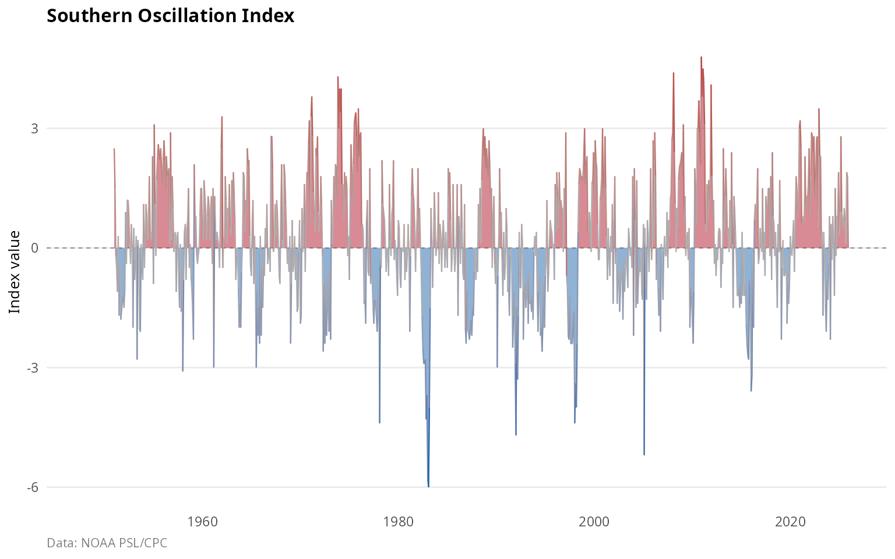
Nino SST regions
Four overlapping regions in the equatorial Pacific are monitored for SST anomalies [5]:
| Region | Coordinates | Characteristics |
|---|---|---|
| Nino 1+2 | 0-10S, 90W-80W | Far eastern Pacific, coastal |
| Nino 3 | 5N-5S, 150W-90W | Eastern Pacific, traditional |
| Nino 3.4 | 5N-5S, 170-120W | Central-eastern Pacific, standard |
| Nino 4 | 5N-5S, 160E-150W | Central Pacific, Modoki events |
nino_indices <- c("Nino12", "Nino3", "Nino34", "Nino4")
plot_indices(
climate_monthly,
indices = nino_indices,
start_year = 1980,
title = "Nino SST region anomalies"
)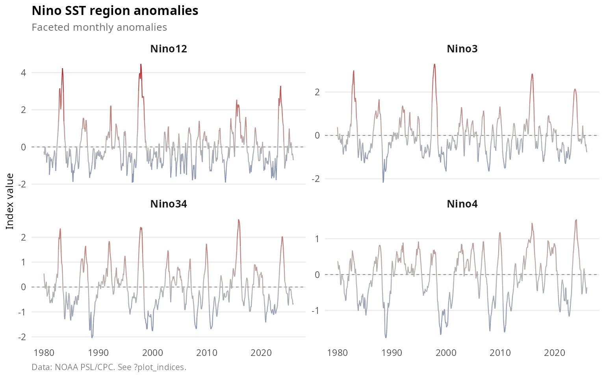
The Nino 3.4 region is most commonly used because it shows the strongest atmosphere-ocean coupling and best predicts global teleconnections.
Oceanic Nino Index (ONI)
The ONI is NOAA’s operational ENSO index, defined as the 3-month running mean of Nino 3.4 SST anomalies [6]. El Nino/La Nina episodes are declared when the ONI exceeds +/- 0.5C for at least 5 consecutive overlapping 3-month periods.
plot_index(
climate_monthly,
"ONI",
fill_anomaly = TRUE,
highlight_extremes = TRUE,
title = "Oceanic Nino index (operational ENSO monitoring)"
)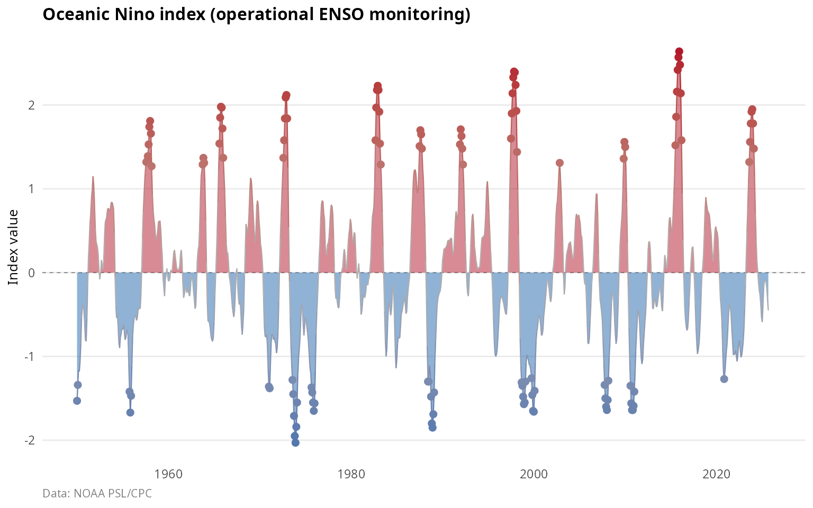
Trans-Nino Index (TNI)
The TNI measures the SST gradient across the equatorial Pacific [7]:
\[\text{TNI} = \text{Nino1+2}_{\text{norm}} - \text{Nino4}_{\text{norm}}\]
Positive TNI indicates “canonical” eastern Pacific El Nino; negative TNI indicates central Pacific (Modoki) El Nino.
Bivariate ENSO Timeseries (BEST)
The BEST index combines SOI and Nino 3.4 using singular value decomposition to reduce measurement noise from either component alone [8].
Multivariate ENSO Index (MEI)
The MEI.v2 is the most comprehensive ENSO index, combining five variables over the tropical Pacific [9]: sea level pressure; sea surface temperature; surface zonal wind (u-component); surface meridional wind (v-component); and outgoing longwave radiation as a proxy for convection.
The MEI is computed as the leading EOF of these combined fields and is provided on a bimonthly sliding basis (DJ, JF, FM, …, ND).
data(climate_mei)
if (nrow(climate_mei) > 0) {
ggplot(climate_mei, aes(x = date, y = value)) +
geom_col(aes(fill = value), width = 45) +
scale_fill_anomaly() +
labs(
title = "Multivariate ENSO index (MEI v2)",
subtitle = "Bimonthly values combining 5 atmospheric and oceanic variables",
x = NULL,
y = "MEI value"
) +
theme_climate()
}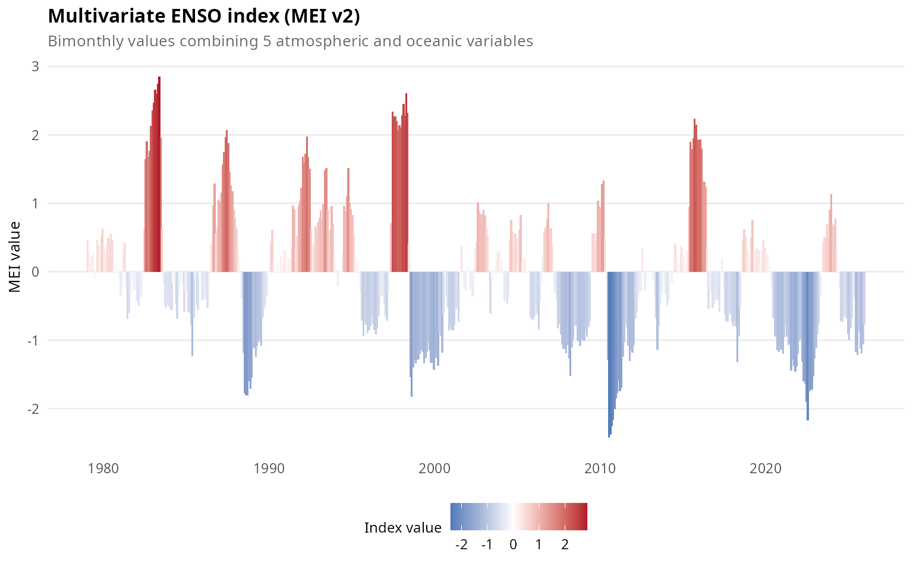
ENSO teleconnections
ENSO influences global climate through atmospheric teleconnections [10]. El Nino events bring warm and dry conditions to Australia, Indonesia, and Southeast Asia; drought to southern Africa; flooding to Peru and Ecuador; warm winters to Canada and the northern US; increased Atlantic hurricane wind shear resulting in fewer hurricanes; and enhanced California rainfall.
La Nina events produce enhanced monsoons in Australia and Southeast Asia; drought in the US Southwest and South America; cold winters in the northern US; and reduced Atlantic hurricane wind shear leading to more hurricanes.
Pacific multidecadal variability
Pacific Decadal Oscillation (PDO)
The PDO represents the leading pattern of North Pacific SST variability north of 20N [11]. Unlike ENSO, the PDO exhibits persistence on decadal timescales with “regime shifts” occurring roughly every 20-30 years.
The PDO is calculated as the leading EOF of monthly SST anomalies in the North Pacific after removing the global mean SST trend. The pattern shows warm (cool) anomalies in the eastern Pacific; cool (warm) anomalies in the central North Pacific forming a horseshoe pattern; and its strongest signal in the Kuroshio-Oyashio extension.
plot_index(
climate_monthly,
"PDO",
fill_anomaly = TRUE,
smooth = 0.05,
title = "Pacific decadal oscillation"
)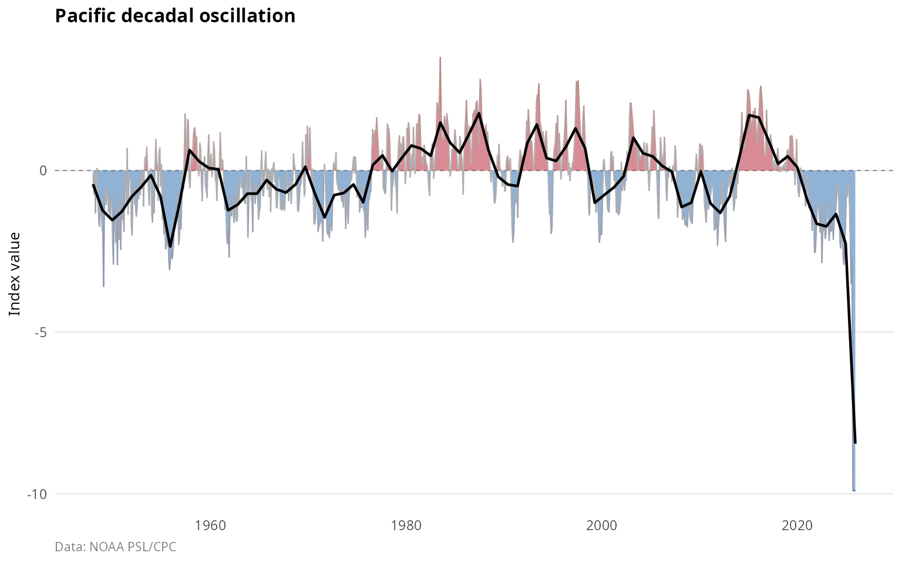
The PDO has exhibited distinct regime shifts over the instrumental record: a positive phase from 1925 to 1946; a negative phase from 1947 to 1976; a positive phase from 1977 to 1998; a negative phase from 1999 to 2013; and mixed conditions from 2014 to present.
Interdecadal Pacific Oscillation (IPO)
The IPO is the basin-scale counterpart to the PDO, capturing coherent SST variability across the entire Pacific [12]. The Tripole Index (TPI) measures the IPO as:
\[\text{TPI} = \text{SSTA}_{\text{central}} - \frac{\text{SSTA}_{\text{NW}} + \text{SSTA}_{\text{SW}}}{2}\]
Where the regions are: - Central: 10S-10N, 170E-90W - Northwest: 25-45N, 140E-145W - Southwest: 50-15S, 150E-160W
plot_indices(
climate_monthly,
indices = c("PDO", "IPO_TPI"),
start_year = 1900,
title = "Pacific multidecadal indices"
)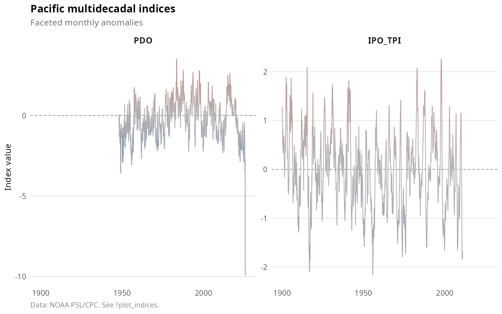
PDO-ENSO interactions
The PDO modulates ENSO impacts [13]. When the PDO and ENSO are in phase, teleconnections are enhanced; when they are out of phase, teleconnections are weakened.
Atlantic variability
Atlantic Multidecadal Oscillation (AMO)
The AMO represents coherent multidecadal variability in North Atlantic SST (0-60N) with a period of 60-80 years [14]. The index is computed as the area-weighted average SST anomaly after detrending to remove anthropogenic warming:
\[\text{AMO} = \overline{\text{SSTA}}_{\text{North Atlantic}} - \text{trend}\]
plot_indices(
climate_monthly,
indices = c("AMO_unsmoothed", "AMO_smoothed"),
start_year = 1856,
title = "Atlantic multidecadal oscillation"
)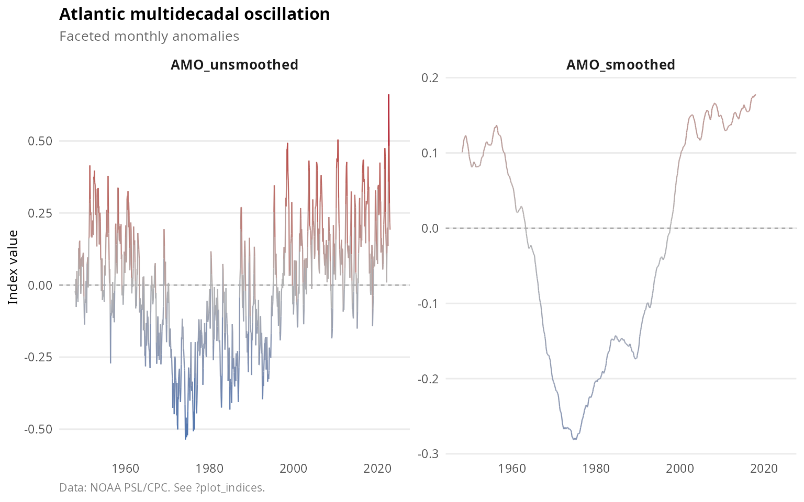
The AMO has oscillated between phases over the historical record: positive from 1870 to 1900; negative from 1900 to 1925; positive from 1925 to 1965; negative from 1965 to 1995; and positive from 1995 to present.
The AMO influences Atlantic hurricane activity, with positive phases associated with more hurricanes; Sahel rainfall, with positive phases producing wetter conditions; European summer temperatures; and North American drought patterns.
Tropical Atlantic indices
Tropical Northern Atlantic (TNA)
The TNA measures SST anomalies in the northern tropical Atlantic (5.5-23.5N, 15-57.5W) [15]. It responds to ENSO with a 4-6 month lag through atmospheric bridge mechanisms.
Tropical Southern Atlantic (TSA)
The TSA measures SST anomalies in the southern tropical Atlantic (0-20S, 10E-30W). The meridional SST gradient between TNA and TSA influences the position of the Atlantic ITCZ.
plot_indices(
climate_monthly,
indices = c("TNA", "TSA"),
start_year = 1950,
title = "Tropical Atlantic SST indices"
)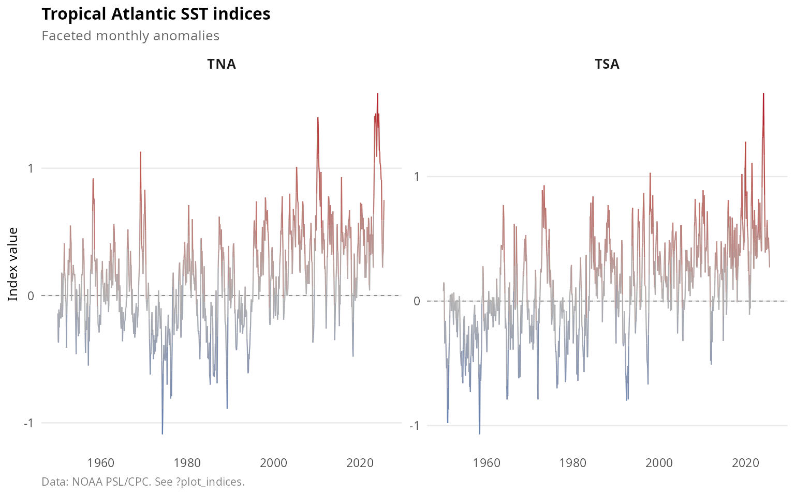
Atlantic Tripole
The Atlantic Tripole is the leading EOF of North Atlantic SST showing a tripole pattern with same-sign anomalies at tropical and subpolar latitudes and opposite sign in the subtropics [16]. This pattern is primarily forced by NAO-related surface heat fluxes.
North Tropical Atlantic (NTA)
The NTA measures SST in the main development region for Atlantic hurricanes. Warm NTA conditions increase hurricane potential intensity.
Polar oscillations
Arctic Oscillation (AO)
The AO is the leading mode of Northern Hemisphere atmospheric variability, characterized by opposing pressure anomalies between the Arctic and mid-latitudes [17]. It is calculated as the leading EOF of sea level pressure poleward of 20N.
During positive AO phases, the polar vortex is strong, the jet stream is displaced poleward, northern Europe experiences mild and wet winters, and cold Arctic air remains contained at high latitudes.
During negative AO phases, the polar vortex weakens, the jet stream becomes wavy with meridional flow, cold air outbreaks occur in mid-latitudes, and blocking patterns become more common.
plot_index(
climate_monthly,
"AO",
fill_anomaly = TRUE,
title = "Arctic Oscillation"
)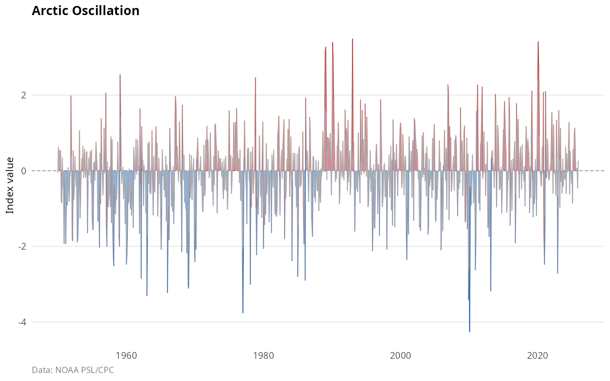
Antarctic Oscillation (AAO)
The AAO, also called the Southern Annular Mode (SAM), is the leading mode of Southern Hemisphere extratropical circulation [18]. It is calculated as the leading EOF of 700 hPa geopotential height poleward of 20S.
The AAO has shown a positive trend since the 1970s, attributed to stratospheric ozone depletion and greenhouse gas increases [19].
plot_index(
climate_monthly,
"AAO",
fill_anomaly = TRUE,
title = "Antarctic Oscillation (Southern Annular Mode)"
)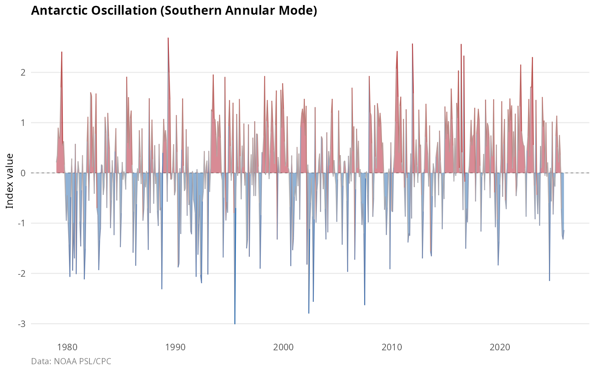
AO-NAO relationship
The AO and NAO are closely related but not identical [20]:
data(climate_monthly_wide)
if (all(c("AO", "NAO") %in% names(climate_monthly_wide))) {
recent <- climate_monthly_wide[climate_monthly_wide$date >= "1980-01-01", ]
r <- cor(recent$AO, recent$NAO, use = "complete.obs")
cat("AO-NAO correlation (1980-present):", round(r, 3))
}
#> AO-NAO correlation (1980-present): 0.596Teleconnection patterns
North Atlantic Oscillation (NAO)
The NAO is the dominant pattern of atmospheric variability over the North Atlantic, governing weather and climate from eastern North America to western Europe [21].
The NAO is defined as the pressure difference between the Icelandic Low and the Azores High. Two versions are commonly used: the CPC NAO, based on rotated EOF analysis of 500 hPa heights; and the Jones NAO, a station-based index using Gibraltar and Iceland observations available since 1821.
plot_indices(
climate_monthly,
indices = c("NAO", "NAO_Jones"),
start_year = 1900,
title = "NAO indices comparison"
)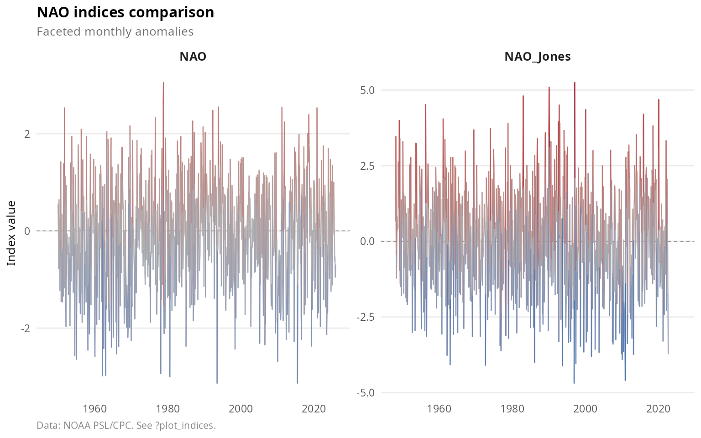
The NAO influences European winter climate, with positive phases bringing mild and wet conditions to northern Europe; US East Coast winter storms; Greenland ice sheet mass balance; and North Atlantic ecosystems and fisheries.
Pacific North American (PNA)
The PNA pattern is the second leading mode of Northern Hemisphere winter variability after the AO [22]. It consists of four centers of action: the North Pacific with opposite sign to the tropics; western Canada with the same sign as the tropics; the Gulf of Alaska with the same sign as the tropics; and the southeastern US with opposite sign.
Positive PNA phases feature an enhanced ridge over western North America; warm, dry conditions in the US Northwest; cold, wet conditions in the Southeast US; and an enhanced Aleutian Low.
plot_index(
climate_monthly,
"PNA",
fill_anomaly = TRUE,
title = "Pacific North American pattern"
)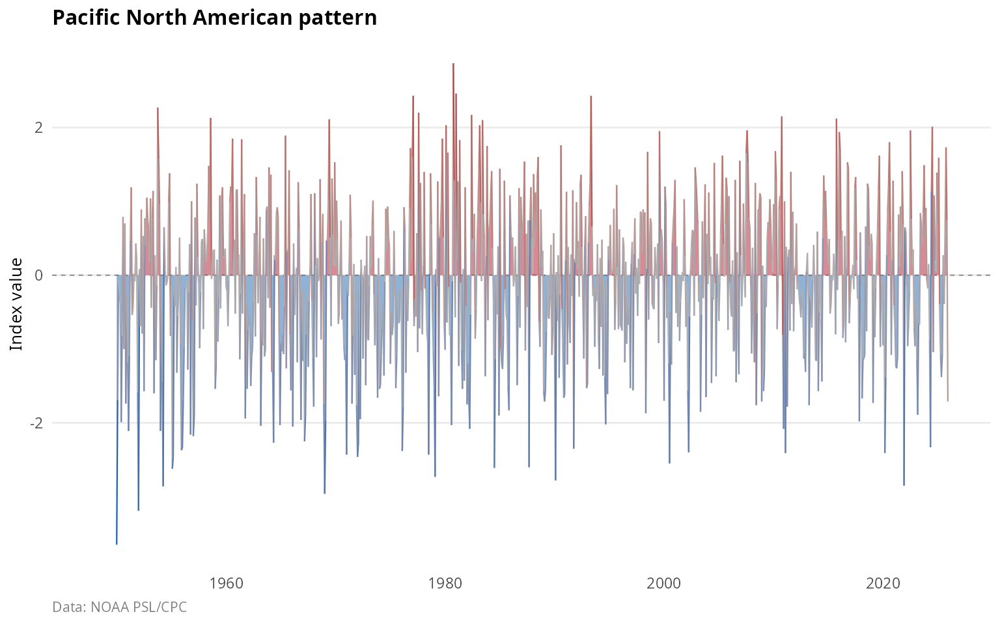
The PNA responds to ENSO forcing: El Nino tends to produce positive PNA, while La Nina produces negative PNA.
Western Pacific (WP)
The WP pattern features a north-south dipole of geopotential height anomalies over the western North Pacific [23]. It strongly influences East Asian climate, including Japanese winter temperatures, Korean Peninsula precipitation, and the Chinese winter monsoon.
East Pacific/North Pacific (EP/NP)
The EP/NP pattern is distinct from the PNA, with primary centers over the Gulf of Alaska and the western subtropical Pacific. It modulates North Pacific storm tracks.
East Atlantic/Western Russia (EA/WR)
The EA/WR pattern spans from the North Atlantic to western Eurasia with four centers of action. It influences European temperature extremes, Mediterranean precipitation, and western Russian climate.
North Pacific Index (NP)
The NP index is the area-weighted sea level pressure over 30-65N, 160E-140W [24]. Low NP indicates a deeper Aleutian Low, associated with an enhanced Pacific storm track, warm SST along the North American coast, and ecosystem regime shifts affecting Pacific salmon and zooplankton.
Northern Oscillation Index (NOI)
The NOI measures the pressure anomaly difference between the North Pacific High and Darwin [25]. It captures ENSO-related extratropical variability and is useful for US West Coast climate impacts.
Indian Ocean Dipole (IOD)
Physical mechanism
The Indian Ocean Dipole is a coupled ocean-atmosphere mode in the tropical Indian Ocean [26]. It involves anomalous SST gradients between the western (Arabian Sea) and eastern (Indonesia) Indian Ocean.
The Dipole Mode Index (DMI) is calculated as:
\[\text{DMI} = \text{SSTA}_{\text{west}} - \text{SSTA}_{\text{east}}\]
Where: - West: 50-70E, 10S-10N - East: 90-110E, 10S-0
plot_index(
climate_monthly,
"DMI",
fill_anomaly = TRUE,
title = "Indian Ocean Dipole Mode Index"
)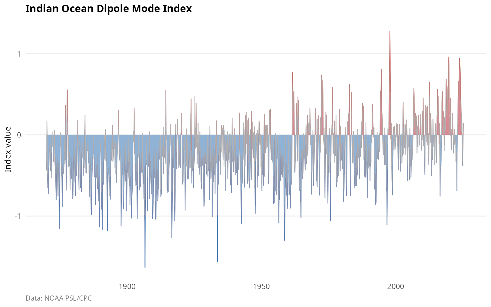
IOD phases
Positive IOD events feature cool SST near Indonesia due to anomalous upwelling, warm SST in the western Indian Ocean, drought in Indonesia and Australia, enhanced rainfall in East Africa, and effects that can amplify or counteract ENSO.
Negative IOD events feature warm SST near Indonesia, cool western Indian Ocean temperatures, and above-normal Australian rainfall.
IOD-ENSO interactions
The IOD can occur independently of ENSO but often develops in conjunction with El Nino events [27]. When El Nino and positive IOD co-occur, impacts on Australia are amplified (severe drought).
Stratospheric dynamics
Quasi-Biennial Oscillation (QBO)
The QBO is the dominant mode of variability in the equatorial stratosphere, characterized by alternating easterly and westerly wind regimes that descend through the stratosphere with a period of approximately 28 months [28].
The QBO index represents the zonal wind at a specific pressure level (typically 30 or 50 hPa) over the equator.
plot_index(
climate_monthly,
"QBO",
fill_anomaly = TRUE,
title = "Quasi-Biennial Oscillation (30 hPa)"
)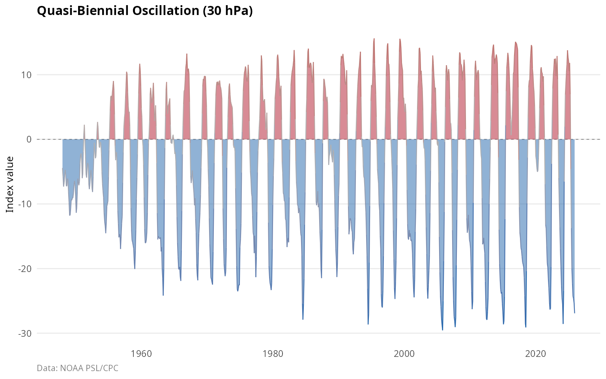
The QBO is generated by upward-propagating tropical waves, with easterly and westerly phases descending at approximately 1 km per month, and each phase lasting 12-16 months.
The QBO modulates polar vortex strength; influences Atlantic hurricane activity, with westerly phases associated with more hurricanes; affects tropical convection and monsoons; and interacts with the solar cycle.
Precipitation indices
Indian monsoon index
The Indian monsoon index measures June-September rainfall over the core monsoon region of India [29]. The monsoon delivers ~80% of India’s annual rainfall, critical for agriculture.
Monsoon variability is driven by ENSO, with El Nino producing weak monsoons; the IOD, with positive phases weakening the monsoon; Eurasian snow cover; and the Atlantic AMO.
Sahel rainfall index
The Sahel rainfall index measures June-October precipitation over the Sahel region (10-20N, 20W-10E) [30]. This semi-arid region experienced severe drought in the 1970s-80s.
Sahel rainfall is driven by the AMO, with positive phases producing wetter conditions; global SST patterns; land surface feedbacks; and anthropogenic aerosols.
plot_indices(
climate_monthly,
indices = c("Indian_Monsoon", "Sahel_Rainfall"),
start_year = 1900,
title = "Precipitation indices"
)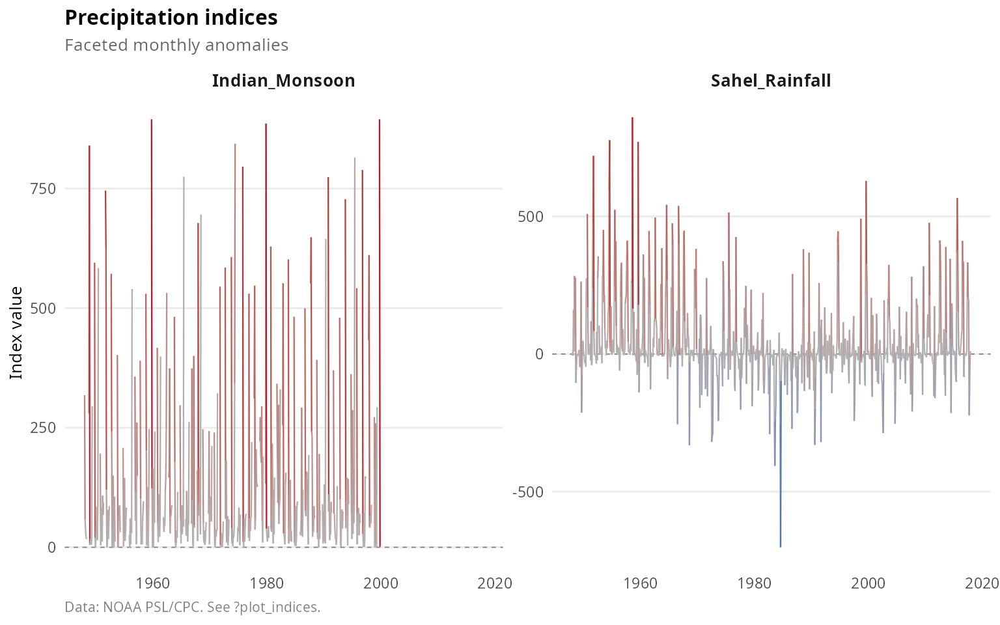
Other indices
Solar flux (F10.7)
The F10.7 index measures solar radio emission at 2800 MHz (10.7 cm wavelength) from Penticton, Canada [31]. It serves as a proxy for solar UV and EUV radiation affecting the upper atmosphere.
The solar cycle, with its 11-year periodicity, influences stratospheric ozone and temperature, upper atmosphere chemistry, and possible surface climate effects, though the latter remains debated.
Global temperature
The global mean surface temperature anomaly combines land and ocean measurements to track global warming [32]. Superimposed on the long-term warming trend is interannual variability driven by ENSO and volcanic eruptions.
Cross-index relationships
Many climate indices are correlated due to shared forcing mechanisms or teleconnections. Understanding these relationships is essential for climate attribution and prediction.
# Select key indices for correlation
key_indices <- c(
"NAO", "AO", "PNA", # Teleconnections
"PDO", "IPO_TPI", # Pacific multidecadal
"SOI", "Nino34", "ONI", # ENSO
"AMO_unsmoothed", "TNA", # Atlantic
"DMI", # Indian Ocean
"QBO" # Stratospheric
)
plot_correlation(
climate_monthly_wide,
indices = key_indices,
start_year = 1980,
title = "Cross-correlations among major climate indices"
)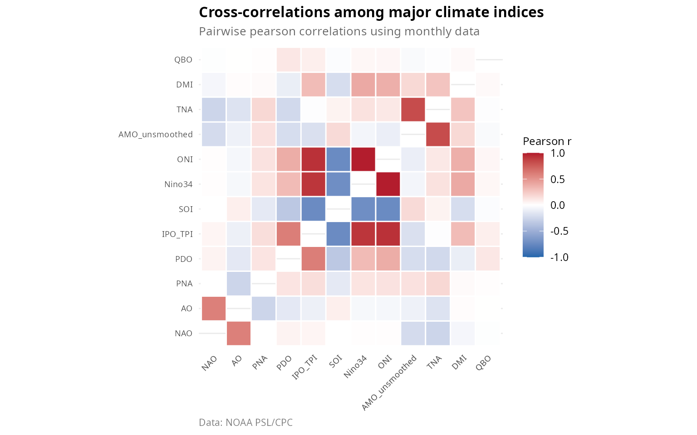
Notable correlations
Strong positive correlations occur among ENSO indices such as SOI, Nino regions, and ONI, which measure the same phenomenon; and between AO and NAO, which represent closely related circulation patterns.
Strong negative correlations exist between SOI and Nino34 by definition, as they capture opposite phases of ENSO; and between NAO and blocking events, which have an inverse relationship.
Lagged relationships include ENSO leading TNA by 4-6 months, and ENSO leading PDO through tropical forcing of extratropical variability.
Data quality considerations
Observational changes
Climate indices are derived from observations that have changed over time [33], including station relocations and instrumentation changes; the transition from ship to satellite observations; changes in SST measurement methods such as bucket sampling, engine intake, and drifting buoys; and reanalysis data inhomogeneities.
Temporal coverage
Data coverage varies substantially among indices:
data(climate_summary)
coverage <- climate_summary[, c("index", "start_year", "end_year", "pct_complete")]
coverage <- coverage[order(coverage$start_year), ]
knitr::kable(
head(coverage, 15),
caption = "Temporal coverage of climate indices (earliest 15)"
)| index | start_year | end_year | pct_complete |
|---|---|---|---|
| DMI | 1870 | 2025 | 99.6 |
| IPO_TPI | 1870 | 2010 | 100.0 |
| AMO_smoothed | 1948 | 2023 | 92.2 |
| AMO_unsmoothed | 1948 | 2023 | 98.8 |
| Atlantic_Tripole | 1948 | 2008 | 100.0 |
| TNA | 1948 | 2025 | 99.6 |
| TSA | 1948 | 2025 | 99.6 |
| WHWP | 1948 | 2025 | 99.6 |
| QBO | 1948 | 2025 | 100.0 |
| BEST | 1948 | 2025 | 100.0 |
| Nino12 | 1948 | 2025 | 97.4 |
| Nino3 | 1948 | 2025 | 97.4 |
| Nino34 | 1948 | 2025 | 97.4 |
| Nino4 | 1948 | 2025 | 97.4 |
| SOI | 1948 | 2025 | 96.2 |
Recommendations for analysis
For robust multi-index comparisons, use the common period of 1979 to present, which corresponds to the satellite era. Some indices extend back to the 1800s, though with greater uncertainty. Missing values should be handled appropriately rather than simply interpolated. Consider detrending for analyses where trends are confounding factors.
Applications
Ecological time series analysis
Climate indices are widely used to explain ecological variability [34], including fish recruitment and stock dynamics, seabird breeding success, terrestrial phenology, and wildfire activity.
Summary
The oscillatoRs package provides access to 43 climate oscillation indices covering the major modes of Earth’s climate variability:
| Category | Count | Key indices |
|---|---|---|
| ENSO | 9 | SOI, Nino34, ONI, MEI |
| Teleconnection | 8 | NAO, AO, PNA, WP |
| Pacific multidecadal | 2 | PDO, IPO |
| Atlantic | 8 | AMO, TNA, TSA |
| Polar | 2 | AO, AAO |
| Other | 7+ | DMI, QBO, etc. |
These indices represent decades of research into climate variability and provide essential tools for understanding how the climate system operates on interannual to multidecadal timescales.
References
[1] Trenberth, K.E., et al. (1998). Progress during TOGA in understanding and modeling global teleconnections associated with tropical sea surface temperatures. J. Geophys. Res., 103(C7), 14291-14324. doi:10.1029/97JC01444
[2] Bjerknes, J. (1969). Atmospheric teleconnections from the equatorial Pacific. Mon. Wea. Rev., 97(3), 163-172. doi:10.1175/1520-0493(1969)097<0163:ATFTEP>2.3.CO;2
[3] McPhaden, M.J., Zebiak, S.E., & Glantz, M.H. (2006). ENSO as an integrating concept in Earth science. Science, 314(5806), 1740-1745. doi:10.1126/science.1132588
[4] Ropelewski, C.F. & Jones, P.D. (1987). An extension of the Tahiti-Darwin Southern Oscillation Index. Mon. Wea. Rev., 115(9), 2161-2165. doi:10.1175/1520-0493(1987)115<2161:AEOTTS>2.0.CO;2
[5] Trenberth, K.E. (1997). The definition of El Nino. Bull. Amer. Meteor. Soc., 78(12), 2771-2778. doi:10.1175/1520-0477(1997)078<2771:TDOENO>2.0.CO;2
[6] Huang, B., et al. (2017). Extended Reconstructed Sea Surface Temperature, Version 5 (ERSSTv5). J. Climate, 30(20), 8179-8205. doi:10.1175/JCLI-D-16-0836.1
[7] Trenberth, K.E. & Stepaniak, D.P. (2001). Indices of El Nino evolution. J. Climate, 14(8), 1697-1701. doi:10.1175/1520-0442(2001)014<1697:LIOENO>2.0.CO;2
[8] Smith, C.A. & Sardeshmukh, P.D. (2000). The effect of ENSO on the intraseasonal variance of surface temperatures in winter. Int. J. Climatol., 20(13), 1543-1557. doi:10.1002/1097-0088(20001115)20:13<1543::AID-JOC579>3.0.CO;2-A
[9] Wolter, K. & Timlin, M.S. (2011). El Nino/Southern Oscillation behaviour since 1871 as diagnosed in an extended multivariate ENSO index (MEI.ext). Int. J. Climatol., 31(7), 1074-1087. doi:10.1002/joc.2336
[10] Alexander, M.A., et al. (2002). The atmospheric bridge: The influence of ENSO teleconnections on air-sea interaction over the global oceans. J. Climate, 15(16), 2205-2231. doi:10.1175/1520-0442(2002)015<2205:TABTIO>2.0.CO;2
[11] Mantua, N.J., et al. (1997). A Pacific interdecadal climate oscillation with impacts on salmon production. Bull. Amer. Meteor. Soc., 78(6), 1069-1079. doi:10.1175/1520-0477(1997)078<1069:APICOW>2.0.CO;2
[12] Henley, B.J., et al. (2015). A tripole index for the Interdecadal Pacific Oscillation. Climate Dynamics, 45(11-12), 3077-3090. doi:10.1007/s00382-015-2525-1
[13] Newman, M., et al. (2016). The Pacific Decadal Oscillation, revisited. J. Climate, 29(12), 4399-4427. doi:10.1175/JCLI-D-15-0508.1
[14] Enfield, D.B., Mestas-Nunez, A.M., & Trimble, P.J. (2001). The Atlantic Multidecadal Oscillation and its relation to rainfall and river flows in the continental U.S. Geophys. Res. Lett., 28(10), 2077-2080. doi:10.1029/2000GL012745
[15] Enfield, D.B. & Mayer, D.A. (1997). Tropical Atlantic sea surface temperature variability and its relation to El Nino-Southern Oscillation. J. Geophys. Res., 102(C1), 929-945. doi:10.1029/96JC03296
[16] Marshall, J., et al. (2001). North Atlantic climate variability: Phenomena, impacts and mechanisms. Int. J. Climatol., 21(15), 1863-1898. doi:10.1002/joc.693
[17] Thompson, D.W.J. & Wallace, J.M. (1998). The Arctic Oscillation signature in the wintertime geopotential height and temperature fields. Geophys. Res. Lett., 25(9), 1297-1300. doi:10.1029/98GL00950
[18] Thompson, D.W.J. & Wallace, J.M. (2000). Annular modes in the extratropical circulation. Part I: Month-to-month variability. J. Climate, 13(5), 1000-1016. doi:10.1175/1520-0442(2000)013<1000:AMITEC>2.0.CO;2
[19] Thompson, D.W.J. & Solomon, S. (2002). Interpretation of recent Southern Hemisphere climate change. Science, 296(5569), 895-899. doi:10.1126/science.1069270
[20] Ambaum, M.H.P., Hoskins, B.J., & Stephenson, D.B. (2001). Arctic Oscillation or North Atlantic Oscillation? J. Climate, 14(16), 3495-3507. doi:10.1175/1520-0442(2001)014<3495:AOONAO>2.0.CO;2
[21] Hurrell, J.W. (1995). Decadal trends in the North Atlantic Oscillation: Regional temperatures and precipitation. Science, 269(5224), 676-679. doi:10.1126/science.269.5224.676
[22] Wallace, J.M. & Gutzler, D.S. (1981). Teleconnections in the geopotential height field during the Northern Hemisphere winter. Mon. Wea. Rev., 109(4), 784-812. doi:10.1175/1520-0493(1981)109<0784:TITGHF>2.0.CO;2
[23] Barnston, A.G. & Livezey, R.E. (1987). Classification, seasonality and persistence of low-frequency atmospheric circulation patterns. Mon. Wea. Rev., 115(6), 1083-1126. doi:10.1175/1520-0493(1987)115<1083:CSAPOL>2.0.CO;2
[24] Trenberth, K.E. & Hurrell, J.W. (1994). Decadal atmosphere-ocean variations in the Pacific. Climate Dynamics, 9(6), 303-319. doi:10.1007/BF00204745
[25] Schwing, F.B., Murphree, T., & Green, P.M. (2002). The Northern Oscillation Index (NOI): A new climate index for the northeast Pacific. Prog. Oceanogr., 53(2-4), 115-139. doi:10.1016/S0079-6611(02)00027-7
[26] Saji, N.H., et al. (1999). A dipole mode in the tropical Indian Ocean. Nature, 401(6751), 360-363. doi:10.1038/43854
[27] Ashok, K., Guan, Z., & Yamagata, T. (2003). Influence of the Indian Ocean Dipole on the Australian winter rainfall. Geophys. Res. Lett., 30(15), 1821. doi:10.1029/2003GL017926
[28] Baldwin, M.P., et al. (2001). The quasi-biennial oscillation. Rev. Geophys., 39(2), 179-229. doi:10.1029/1999RG000073
[29] Webster, P.J., et al. (1998). Monsoons: Processes, predictability, and the prospects for prediction. J. Geophys. Res., 103(C7), 14451-14510. doi:10.1029/97JC02719
[30] Giannini, A., Saravanan, R., & Chang, P. (2003). Oceanic forcing of Sahel rainfall on interannual to interdecadal time scales. Science, 302(5647), 1027-1030. doi:10.1126/science.1089357
[31] Tapping, K.F. (2013). The 10.7 cm solar radio flux (F10.7). Space Weather, 11(7), 394-406. doi:10.1002/swe.20064
[32] Hansen, J., et al. (2010). Global surface temperature change. Rev. Geophys., 48(4), RG4004. doi:10.1029/2010RG000345
[33] Kennedy, J.J. (2014). A review of uncertainty in in situ measurements and data sets of sea surface temperature. Rev. Geophys., 52(1), 1-32. doi:10.1002/2013RG000434
[34] Stenseth, N.C., et al. (2002). Ecological effects of climate fluctuations. Science, 297(5585), 1292-1296. doi:10.1126/science.1071281